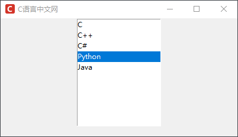
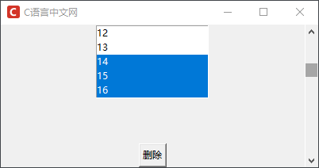
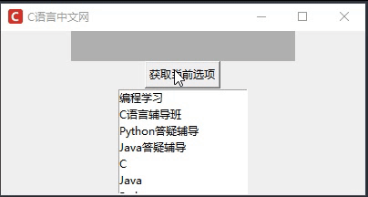
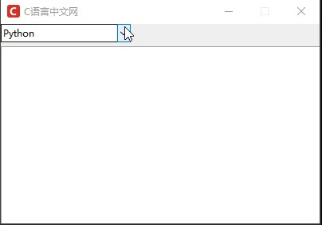

Tkinter列表框和组合框控件详解
列表框（Listbox）和复选框（Combobox）是 Tkinter 中两个控件，由于其非常相似，本节将它们放在一起进行介绍。
下面对列表框控件（Listbox）的常用方法做简单的介绍：
除了共有属性之外，列表框控件也有一些其他属性，如下表所示：
除了上述使用 enumerate() 来实现选项插入的方法外，我们还可以使用 "end" 实现，它表示将选项插入到最后一个位置，所以“Java”一定会被插入到最后一个位置上，而之前的选项会依次向前排列，如下所示：
图2：tkinter Listbox控件
不过需要注意的是 Combobox 并不包含在 tkinter 模块中，而是包含在
对于 Combobox 控件而言，它常用的方法有两个，分别是 get() 和 current()，前者表示获取当前选中选项的内容，后者表示获取选中选项的索引值。下面通过一组简单的示例进一步了解 Combobox 控件，示例代码如下：
Listbox控件
首先介绍一下列表框，即 Listbox。在使用 Tkinter 进行 GUI 编程的过程中，如果需要用户自己进行选择时就可以使用列表框控件。列表框中的选项可以是多个条目，也可以是单个唯一条目，但常用于多个条目。下面对列表框控件（Listbox）的常用方法做简单的介绍：
| 方法 | 说明 |
|---|---|
| activate(index) | 将给定索引号对应的选项激活，即文本下方画一条下划线 |
| bbox(index) | 返回给定索引号对应的选项的边框，返回值是一个以像素为单位的 4 元祖表示边框：(xoffset, yoffset, width, height)， xoffset 和 yoffset 表示距离左上角的偏移位置 |
| curselection() | 返回一个元组，包含被选中的选项序号（从 0 开始） |
| delete(first, last=None) | 删除参数 first 到 last 范围内（包含 first 和 last）的所有选项 |
| get(first, last=None) | 返回一个元组，包含参数 first 到 last 范围内（包含 first 和 last）的所有选项的文本 |
| index(index) | 返回与 index 参数相应选项的序号 |
| itemcget(index, option) | 获得 index 参数指定的项目对应的选项（由 option 参数指定） |
| itemconfig(index, **options) | 设置 index 参数指定的项目对应的选项（由可变参数 **option 指定） |
| nearest(y) | 返回与给定参数 y 在垂直坐标上最接近的项目的序号 |
| selection_set(first, last=None) | 设置参数 first 到 last 范围内（包含 first 和 last）选项为选中状态，使用 selection_includes(序号) 可以判断选项是否被选中。 |
| size() | 返回 Listbox 组件中选项的数量 |
| xview(*args) | 该方法用于在水平方向上滚动 Listbox 组件的内容，一般通过绑定 Scollbar 组件的 command 选项来实现。 如果第一个参数是 "moveto"，则第二个参数表示滚动到指定的位置：0.0 表示最左端，1.0 表示最右端；如果第一个参数是 "scroll"，则第二个参数表示滚动的数量，第三个参数表示滚动的单位（可以是 "units" 或 "pages"），例如：xview("scroll", 2, "pages")表示向右滚动二行。 |
| yview(*args) | 该方法用于在垂直方向上滚动 Listbox 组件的内容，一般通过绑定 Scollbar 组件的 command 选项来实现 |
除了共有属性之外，列表框控件也有一些其他属性，如下表所示：
| 属性 | 说明 |
|---|---|
| listvariable |
1. 指向一个 StringVar 类型的变量，该变量存放 Listbox 中所有的项目 2. 在 StringVar 类型的变量中，用空格分隔每个项目，例如 var.set("c c++ java python") |
| selectbackground | 1. 指定当某个项目被选中的时候背景颜色，默认值由系统指定 |
| selectborderwidth |
1. 指定当某个项目被选中的时候边框的宽度 2. 默认是由 selectbackground 指定的颜色填充，没有边框 3. 如果设置了此选项，Listbox 的每一项会相应变大，被选中项为 "raised" 样式 |
| selectforeground | 1. 指定当某个项目被选中的时候文本颜色，默认值由系统指定 |
| selectmode | 1. 决定选择的模式，tk 提供了四种不同的选择模式，分别是："single"（单选）、"browse"（也是单选，但拖动鼠标或通过方向键可以直接改变选项）、"multiple"（多选）和 "extended"（也是多选，但需要同时按住 Shift 键或 Ctrl 键或拖拽鼠标实现），默认是 "browse" |
| setgrid | 指定一个布尔类型的值，决定是否启用网格控制，默认值是 False |
| takefocus | 指定该组件是否接受输入焦点（用户可以通过 tab 键将焦点转移上来），默认值是 True |
| xscrollcommand | 为 Listbox 组件添加一条水平滚动条，将此选项与 Scrollbar 组件相关联即可 |
| yscrollcommand | 为 Listbox 组件添加一条垂直滚动条，将此选项与 Scrollbar 组件相关联即可 |
1) 创建列表框控件
下面看一组简单的示例，并对 Listbox 控件做进一步讲解，首先创建一个列表框控件：
# 创建一个列表控件，并增加相应的选项
from tkinter import *
# 创建主窗口
win = Tk()
win.title("C语言中文网")
win.geometry('400x200')
win.iconbitmap('C:/Users/Administrator/Desktop/C语言中文网logo.ico')
# 创建列表选项
listbox1 =Listbox(win)
listbox1.pack()
# i表示索引值，item 表示值，根据索引值的位置依次插入
for i,item in enumerate(["C","C++","C#","Python","Java"]):
listbox1.insert(i,item)
# 显示窗口
win.mainloop()
程序运行结果如下所示：

图1：Listbox列表框控件
图1：Listbox列表框控件
除了上述使用 enumerate() 来实现选项插入的方法外，我们还可以使用 "end" 实现，它表示将选项插入到最后一个位置，所以“Java”一定会被插入到最后一个位置上，而之前的选项会依次向前排列，如下所示：
from tkinter import *
# 创建主窗口
win = Tk()
win.title("C语言中文网")
win.geometry('400x200')
win.iconbitmap('C:/Users/Administrator/Desktop/C语言中文网logo.ico')
# 创建列表选项
listbox1 =Listbox(win)
listbox1.pack()
# i表示索引值，item 表示值，根据索引值的位置依次插入
for item in ["C","C++","C#","Python","Java"]:
listbox1.insert("end",item)
# 显示窗口
win.mainloop()
程序运行结果：
图2：tkinter Listbox控件
2) 增加滚动条和删除功能
下面为上述示例增加一个滚动条和选项的删除功能，如下所示：
from tkinter import *
# 创建主窗口
win = Tk()
win.title("C语言中文网")
win.geometry('400x180')
win.iconbitmap('C:/Users/Administrator/Desktop/C语言中文网logo.ico')
# 创建滚动条
s = Scrollbar(win)
# 设置垂直滚动条显示的位置，使得滚动条，靠右侧；通过 fill 沿着 Y 轴填充
s.pack(side = RIGHT,fill = Y)
# 将 selectmode 设置为多选模式，并为Listbox控件添加滚动条
listbox1 =Listbox(win,selectmode = MULTIPLE,height =5, yscrollcommand = s.set)
# i 表示索引值，item 表示值，根据索引值的位置依次插入
for i,item in enumerate(range(1,50)):
listbox1.insert(i,item)
listbox1.pack()
# 设置滚动条，使用 yview使其在垂直方向上滚动 Listbox 组件的内容，通过绑定 Scollbar 组件的 command 参数实现
s.config(command = listbox1.yview)
# 使用匿名函数,创建删除函数，点击删除按钮，会删除选项
bt = Button(win,text='删除',command = lambda x = listbox1:x.delete(ACTIVE))
# 将按钮放置在底部
bt.pack(side = BOTTOM)
# 显示窗口
win.mainloop()
程序运行结果，如下所示：

图3：tkinter listbox控件
图3：tkinter listbox控件
3) StringVar() 添加列表选项
下面演示如何通过 StringVar() 方法动态地获取列表框中的选项，示例代码如下：
import tkinter as tk
from tkinter import messagebox
window = tk.Tk()
window.title("C语言中文网")
window.geometry('400x180')
window.iconbitmap('C:/Users/Administrator/Desktop/C语言中文网logo.ico')
# 创建变量，用var1用来接收鼠标点击的具体选项内容
var1 = tk.StringVar()
l = tk.Label(window, bg='#B0B0B0', font=('微软雅黑', 15), width=20, textvariable=var1)
l.pack()
# 创建一个按钮的点击事件
def click_button():
# 使用 curselection来选中文本
try:
val = lb.get(lb.curselection())
# 设置label值
var1.set(val)
except Exception as e:
e = '发现一个错误'
messagebox.showwarning(e,'没有选择任何条目')
# 创建一个按钮并放置，点击按钮调用print_selection函数
b1 = tk.Button(window, text='获取当前选项', command=click_button)
b1.pack()
# 创建Listbox并为其添加内容
var2 = tk.StringVar()
var2.set(("C语言辅导班", "Python答疑辅导", "Java答疑辅导", "C++辅导"))
# 创建Listbox，通过 listvariable来传递变量
lb = tk.Listbox(window, listvariable=var2)
# 新建一个序列，然后将值循环添加到Listbox控件中
items = ["C", "Java", "Python", "C#", "Golang", "Runby"]
for i in items:
lb.insert('end', i) # 从最后一个位置开始加入值
lb.insert(0, '编程学习') # 在第一个位置插入一段字符串
lb.delete(4) # 删除第2个位置处的索引
lb.pack()
#主窗显示
window.mainloop()
程序运行结果如下：

图4：tkinter Listbox控件
图4：tkinter Listbox控件
Combobox控件
通过前面内容的介绍我们知道 Listbox 是一个供用户从列表项中选择相应条目的控件。但在有些情况下，比如列表的项目过多时，若使用列表控件，列出所有选项就会显得界面格外臃肿，这时就需要用到 Combobox 控件，也就是下拉菜单控件（或称复合框），该控件是列表控件的改进版，具有更加灵活的界面，因此其应用场景相比于前者要更加广泛。不过需要注意的是 Combobox 并不包含在 tkinter 模块中，而是包含在
tkinter.ttk子模块中，因此若想使用 Combobox 控件，需要使用下面的导包方式：
from tkinter import ttk下面对 Combobox 控件做简单的介绍，其语法格式如下所示：
cbox=Combobox(窗口对象,[参数列表])Combobox 控件在形式虽然与列表控件存在不同，但它们的本质是相同，因此属性和方法是通用的。
对于 Combobox 控件而言，它常用的方法有两个，分别是 get() 和 current()，前者表示获取当前选中选项的内容，后者表示获取选中选项的索引值。下面通过一组简单的示例进一步了解 Combobox 控件，示例代码如下：
import tkinter
from tkinter import ttk # 导入ttk模块，下拉菜单控件位于ttk子模块中
# 创建窗口
win = tkinter.Tk()
win.title("C语言中文网")
# win.geometry('400x200')
win.iconbitmap('C:/Users/Administrator/Desktop/C语言中文网logo.ico')
win.geometry('400x250')
win.resizable(0,0)
# 创建下拉菜单
cbox = ttk.Combobox(win)
# 使用 grid() 来控制控件的位置
cbox.grid(row = 1, sticky="NW")
# 设置下拉菜单中的值
cbox['value'] = ('C','C#','Go','Python','Java')
#通过 current() 设置下拉菜单选项的默认值
cbox.current(3)
# 编写回调函数，绑定执行事件,向文本插入选中文本
def func(event):
text.insert('insert',cbox.get()+"\n")
# 绑定下拉菜单事件
cbox.bind("<<ComboboxSelected>>",func)
# 新建文本框
text = tkinter.Text(win)
# 布局
text.grid(pady = 5)
win.mainloop()
程序运行结果：

图5：tkinter Combobox控件
图5：tkinter Combobox控件
关注公众号「站长严长生」，在手机上阅读所有教程，随时随地都能学习。内含一款搜索神器，免费下载全网书籍和视频。

微信扫码关注公众号